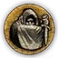
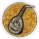
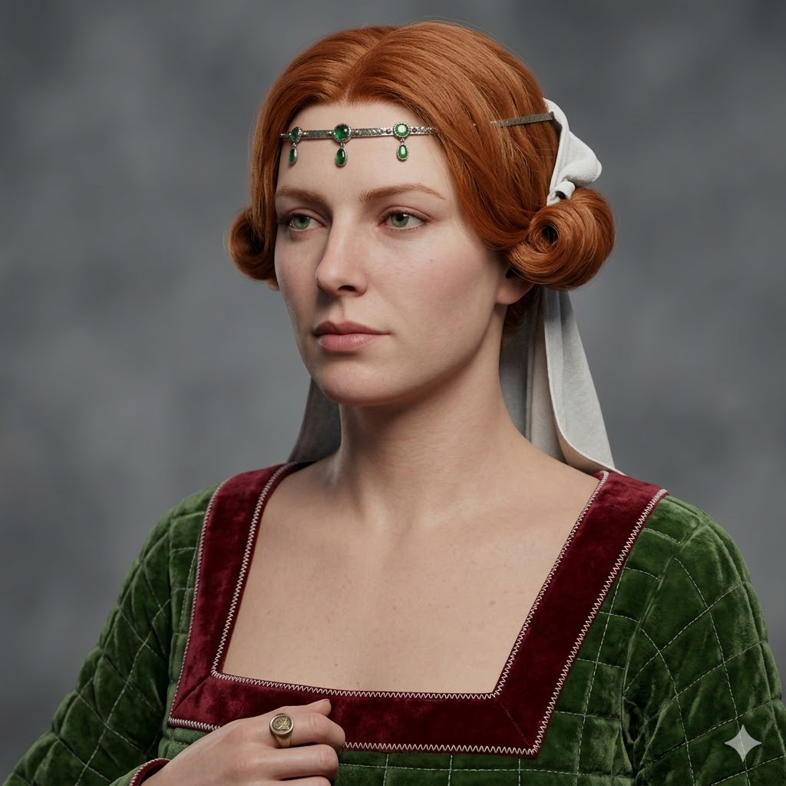
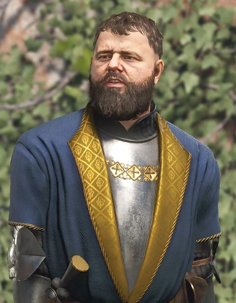

O HŘE

Příběh a imerze
Děj hry přímo navazuje na události konce Kingdom Come: Deliverance 2. Zikmund byl vyhnán z Čech,
rod Ruthardů se vrátil na Malešov a opravuje pobořenou tvrz.
Na oslavu míru pořádá Hanuš z Lipé honosnou svatbu. Celá středověká tvrz Malešov bude na víkend
uzavřena pouze pro potřeby našeho příběhu, historické hostiny a ubytování hostí. Zažijte
autentickou dobovou veselici se vším všudy – bohatá hostina, turnaj v kostkách v krčmě a plně
konverzační diplomatické zápletky.
PRAKTICKÉ

Harmonogram a formát
Pátek večer je věnován příjezdu a seznamovacím workshopům. V sobotu v poledne propuká samotná hra rozdělená do tří dějství.

Kostýmy a ubytování
Kostýmy kompletně zajišťují organizátoři. Vše odpovídá reáliím roku 1403. Spí se společně v autentických prostorech.
Cena
Text pro třetí odstavec, který může být libovolně dlouhý.
Lokace
Další dodatečný text.
Další informace
Zde je prostor pro další informace.
SEZNAM POSTAV
Každá postava má dvě převažující témata, která určují její osud.
 Boj
Boj
Intriky Pijáctví
Pijáctví Politika
Politika
Romantika
Jan Ptáček
Mladý panovník, který se vrací na Malešov a připravuje velkou svatbu.

Jitka z Kunštátu
Budoucí nevěsta, jejíž příchod na Malešov stvrdí mír mezi rody.

Hanuš z Lipé
Starý pán, který svatbu pořádá a střeží bezpečí celého panství.
ZÁPIS HOSTŮ
Svitky s přihláškami budou otevřeny od 19. ledna do 31. ledna. Každý z autorů drží právo jednoho žolíka pro obsazení postav, zbylá dvě třetiny míst na hostině budou spravedlivě vylosovány.
✒ Zaregistrovat seTVOŘITELÉ PŘÍBĚHU

David Vávra


Bára Drbohlavová